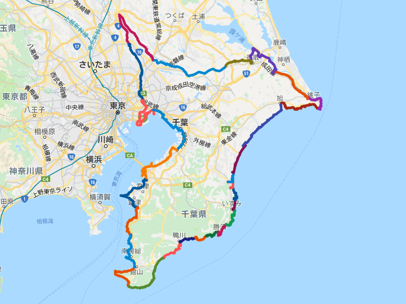

千葉の見どころを紹介するページです。
今までに訪れた有名無名２００ヶ所あまりの写真を掲載しています。
千葉の見どころを紹介するブログです。
私が撮った千葉のお気に入り写真です。

千葉県を歩いて一周しました。延べ２８日かかりました。
千葉県は海と川に囲まれているので、歩いて一周することができます。
「川廻し」とは房総丘陵の河川に見られる独特の地形です。
両総用水とは、利根川から栗山川を経由し茂原までの総延長７８キロメートルに及ぶ日本でも有数の農業用水路です。
茂原市押日に素掘りのトンネルがたくさんあります。
昔、農家の方々が丘陵の向こう側にある田畑に行くのに便利なように素掘りのトンネルを掘ったのだそうです。
御成街道は、船橋御殿から東金御殿までのほぼ一直線の道路で、徳川家康が 東金への鷹狩を目的に造らせたものです。
千葉の旧海岸線を歩いてその痕跡を写した写真を掲載しています。
千葉の星景写真を掲載しています。